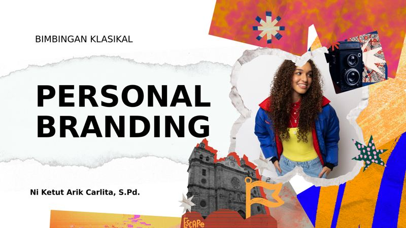
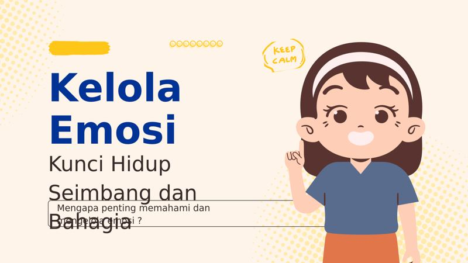
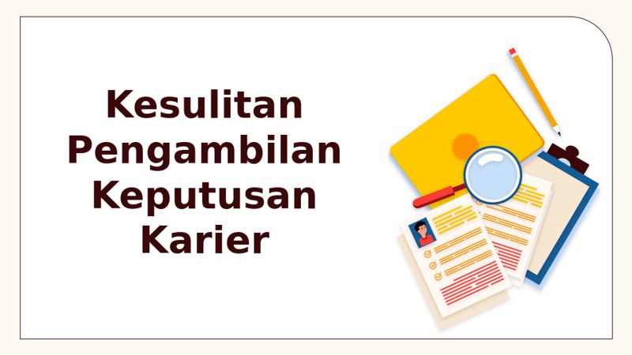
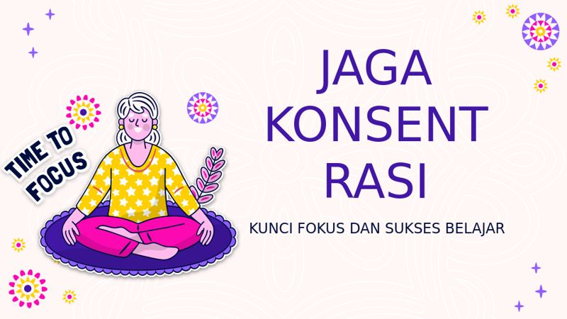
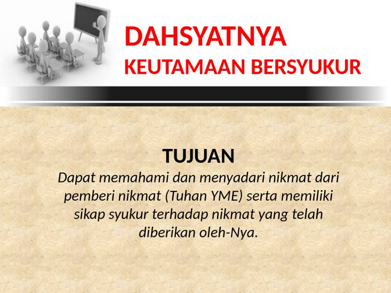
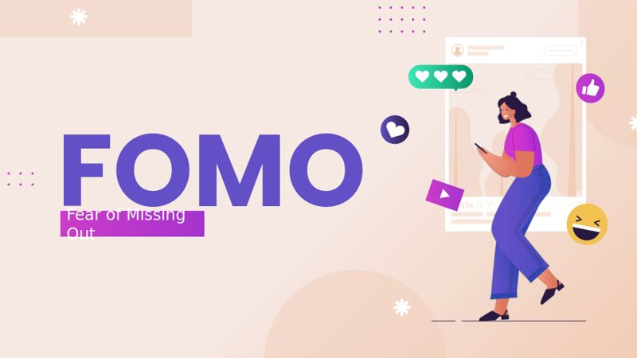

Artikel, kegiatan, dan pendampingan seputar pengenalan diri, kepercayaan diri, dan kesehatan emosi untuk siswa SMP Wisata Sanur — dikelola langsung oleh Tim BK sekolah.
Hal apa yang bikin waktu terasa cepat berlalu buatmu?
Cermin kecil untuk mulai mengenal diri sendiri
Ketik kata kunci untuk mencari di seluruh Layanan Klasikal, Materi PPTX, Game BK, dan Artikel di halaman ini.
Kami adalah Tim Bimbingan dan Konseling SMP Wisata Sanur, senang bisa menemani perjalanan siswa mengenal diri sendiri, membangun rasa percaya diri, dan menghadapi tantangan sehari-hari di sekolah maupun di rumah. Ruang ini dibuat sebagai tempat berbagi materi, aktivitas reflektif, dan media belajar yang ramah untuk siswa.
Beberapa bentuk layanan dan kegiatan yang tersedia untuk mendukung perkembangan siswa.
Sesi ngobrol empat mata yang aman dan rahasia untuk membahas apa pun yang sedang dirasakan.
Diskusi kecil bersama teman sebaya untuk saling belajar dan menguatkan satu sama lain.
Aktivitas reflektif seperti kartu tantangan dan permainan edukatif seputar pengenalan diri dan kepercayaan diri.
Materi bimbingan klasikal per jenjang kelas, lengkap dengan tugas interaktif yang bisa langsung dikerjakan dan disimpan di perangkat siswa.
Mengenal perbedaan belajar dangkal dan belajar mendalam, enam teknik belajar efektif, serta latihan Teknik Feynman dan peta konsep.
Buka materi → Bimbingan Pribadi · Kelas 7Membedakan cara keliru dan tepat memahami kondisi diri, delapan langkah mengenal kekuatan, kekurangan, dan kebutuhan diri, serta rencana menjaga kondisi diri seminggu.
Buka materi → Bimbingan Sosial · Kelas 7Membedakan cara keliru dan tepat menyikapi perbedaan, delapan langkah menghargai keberagaman dan membangun inklusi, serta rencana membangun pertemanan yang inklusif seminggu.
Buka materi → Bimbingan Pribadi · Kelas 7Membedakan cara keliru dan tepat menyikapi diri sendiri, delapan langkah bangga sekaligus menjaga diri termasuk memahami hak atas tubuh, serta rencana percaya diri dan menjaga diri seminggu.
Buka materi → Bimbingan Pribadi · Kelas 7Membedakan cara keliru dan tepat menjaga kebersihan, delapan langkah membiasakan kebersihan diri dan lingkungan, serta rencana membiasakan diri menjaga kebersihan seminggu.
Buka materi → Bimbingan Karier · Kelas 7Membedakan cara keliru dan tepat memilih ekskul, delapan langkah menemukan ekskul yang sesuai minat, serta rencana mengikuti ekskul pilihan seminggu.
Buka materi → Bimbingan Pribadi · Kelas 7Meluruskan anggapan keliru dan fakta tentang perubahan tubuh remaja, delapan langkah menjaga kesehatan reproduksi, serta rencana menjaga pola hidup sehat seminggu.
Buka materi → Bimbingan Sosial · Kelas 7Membedakan cara keliru dan tepat menyikapi perundungan, delapan langkah melawan perundungan, serta rencana bersikap peduli seminggu.
Buka materi → Bimbingan Pribadi · Kelas 7Meluruskan anggapan keliru dan fakta tentang narkotika, delapan langkah melindungi diri dari narkotika, serta rencana mengisi waktu dengan kegiatan positif seminggu.
Buka materi →Mengenal delapan jenis kecerdasan menurut Howard Gardner, menilai kecerdasan menonjol pada diri sendiri, dan menyusun rencana melatihnya.
Buka materi → Bimbingan Belajar · Kelas 8Membedakan kebiasaan mengatur waktu yang baik dan buruk, delapan teknik seperti time blocking dan skala prioritas, serta rencana mengatur waktu seminggu.
Buka materi → Bimbingan Belajar · Kelas 8Mengenal cara mencatat yang lebih efektif lewat mind mapping, delapan langkah membuatnya dengan kata kunci dan warna, serta praktik memetakan satu mata pelajaran.
Buka materi → Bimbingan Karier · Kelas 8Mengenali sikap yang menghambat dan mendukung mimpi, delapan langkah berani melangkah menuju cita-cita, serta rencana mewujudkan target kecil seminggu.
Buka materi → Bimbingan Karier · Kelas 8Membedakan cara keliru dan tepat mengenali potensi diri, delapan langkah menggali bakat, serta menghubungkannya dengan gambaran arah karier ke depan.
Buka materi → Bimbingan Sosial · Kelas 8Mengenali ciri pergaulan yang sehat, delapan prinsip etika berteman seperti kejujuran dan empati, serta refleksi menjaga pertemanan tetap nyaman.
Buka materi → Bimbingan Pribadi · Kelas 8Meluruskan mitos dan fakta seputar HIV/AIDS, delapan fakta penting mulai dari penularan hingga sikap terhadap ODHIV, serta refleksi sikap bijak menghadapinya.
Buka materi →Mengenali batas bercanda dan kekerasan, lima bentuk kekerasan, langkah bersikap tegas, hingga jurnal sikap selama seminggu.
Buka materi → Bimbingan Pribadi · Kelas 9Memahami self love yang sehat, enam cara mempraktikkannya, mengenali tanda kesehatan mental, serta pelacak suasana hati mingguan.
Buka materi → Bimbingan Pribadi · Kelas 9Meluruskan anggapan keliru dan fakta tentang menikah muda, enam langkah menjauhkan diri dari pernikahan dini, serta rencana seminggu mengejar cita-cita.
Buka materi → Bimbingan Karier · Kelas 9Meluruskan anggapan keliru tentang cita-cita, enam langkah menemukan dan mengejar cita-cita, serta peta langkah menuju cita-cita.
Buka materi → Bimbingan Karier · Kelas 9Meluruskan anggapan keliru tentang dunia kerja, lima langkah mengenal berbagai profesi, serta wawancara sederhana dengan seseorang yang bekerja.
Buka materi → Bimbingan Belajar · Kelas 9Meluruskan anggapan keliru tentang mengatur waktu, lima langkah manajemen waktu efektif, serta jadwal harian dan rencana seminggu.
Buka materi → Bimbingan Pribadi · Kelas 9Meluruskan anggapan keliru tentang percaya diri, lima langkah membangun keyakinan pada kemampuan diri, serta daftar pencapaian dan rencana keberanian seminggu.
Buka materi → Bimbingan Sosial · Kelas 9Mengenali ciri hubungan sehat dan tidak sehat, enam langkah menjaga diri dalam relasi, serta menuliskan batasan pribadi dalam berpacaran.
Buka materi → Bimbingan Sosial · Kelas 9Mengenali ciri pertemanan yang tidak sehat, lima langkah menghindari toxic circle, serta rencana membangun pertemanan sehat seminggu.
Buka materi → Bimbingan Pribadi · Kelas 9Meluruskan anggapan keliru dan fakta tentang penyakit menular seksual, enam langkah melindungi diri, serta poster ajakan hidup sehat dan jauh dari perilaku berisiko.
Buka materi → Bimbingan Pribadi · Kelas 9Memahami dorongan seksual masa pubertas sebagai hal wajar, enam langkah mengelolanya secara sehat dan bertanggung jawab, serta daftar kegiatan positif penyalur energi.
Buka materi → Bimbingan Sosial · Kelas 9Meluruskan anggapan keliru tentang bullying, enam langkah berperan aktif melawan perundungan, serta poster ajakan anti-bullying.
Buka materi → Bimbingan Pribadi · Kelas 9Meluruskan anggapan keliru tentang internet dan media sosial, enam langkah bijak berteknologi, serta rencana detoks gawai sederhana.
Buka materi → Bimbingan Pribadi · Kelas 9Meluruskan anggapan keliru tentang meminta bantuan, enam langkah mencari dukungan saat menghadapi masalah, serta surat penyemangat untuk diri sendiri.
Buka materi → Bimbingan Pribadi · Kelas 9Meluruskan anggapan keliru tentang stres, enam langkah mengelola stres dengan sehat, serta daftar kegiatan penenang diri.
Buka materi →Slide materi bimbingan yang bisa diunduh dan digunakan langsung untuk kegiatan klasikal atau belajar mandiri.

Mengenal cara membangun citra diri yang positif dan autentik, sebagai bekal untuk masa depan dan dunia kerja.
Unduh PPTX ↓
Mengenali berbagai jenis emosi dan cara mengelolanya dengan sehat agar tidak berlarut-larut atau meledak-ledak.
Unduh PPTX ↓
Memahami penyebab bingung menentukan arah karier dan langkah-langkah sederhana untuk mulai memutuskan dengan lebih yakin.
Unduh PPTX ↓
Tips dan kebiasaan sederhana untuk menjaga fokus belajar di tengah banyaknya gangguan sehari-hari.
Unduh PPTX ↓
Mengenal manfaat rasa syukur bagi kesehatan mental dan cara melatihnya menjadi kebiasaan sehari-hari.
Unduh PPTX ↓
Memahami apa itu FOMO (fear of missing out), penyebabnya, dan cara menghadapinya agar tetap tenang dan nyaman dengan diri sendiri.
Unduh PPTX ↓Permainan interaktif seputar pengenalan diri, percaya diri, relasi pertemanan, cita-cita, dan manajemen emosi. Mainkan langsung di browser, tidak perlu instal apa pun.
Klik judulnya untuk membaca selengkapnya.
Isi pesan di samping, atau hubungi langsung melalui kontak berikut. Semua cerita akan dijaga kerahasiaannya.